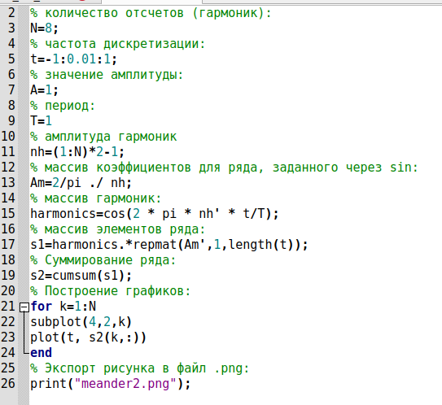
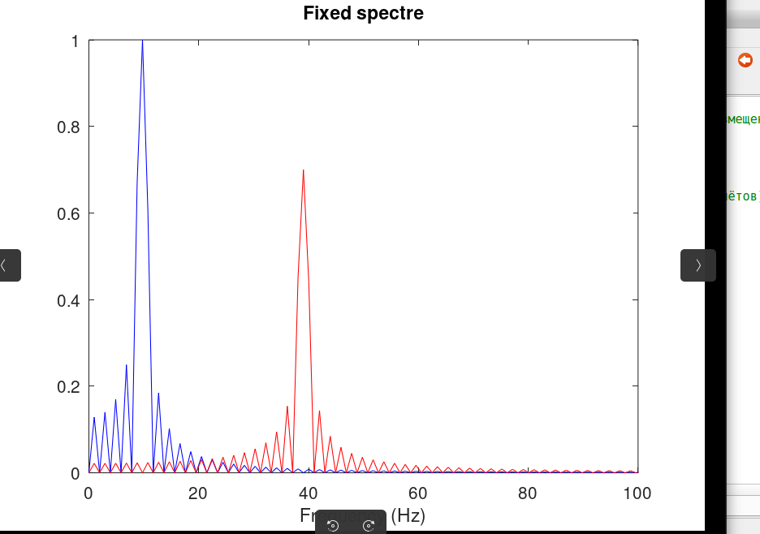
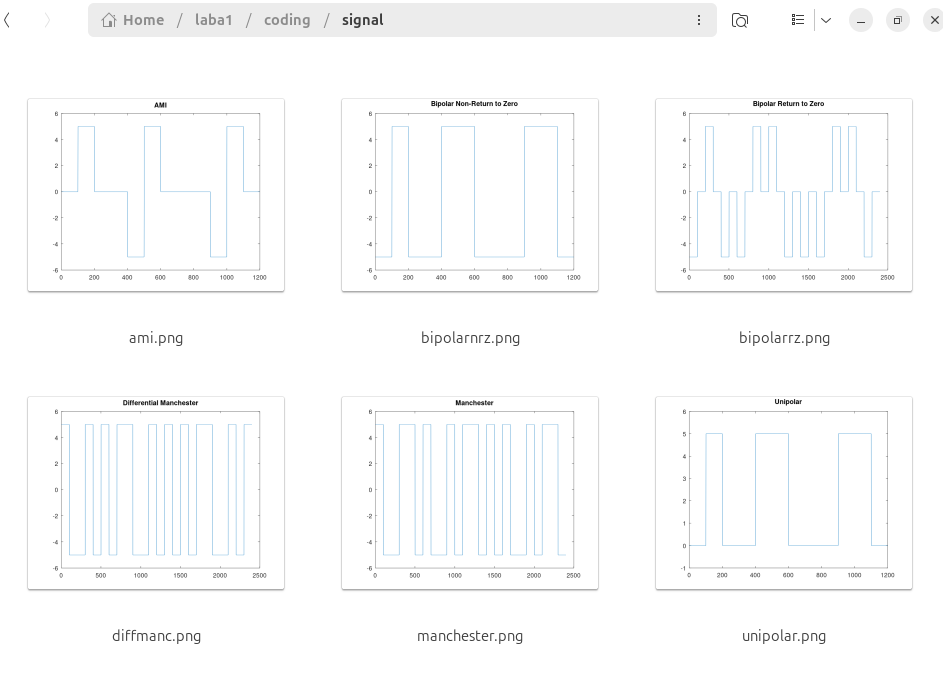
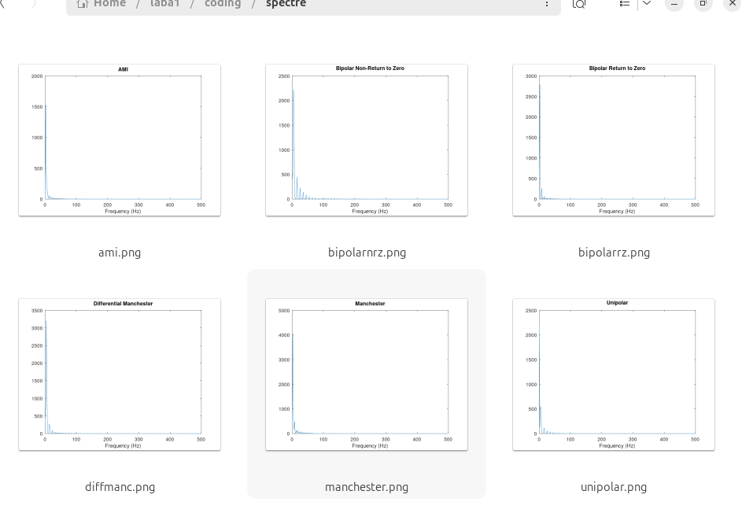

Лабораторная работа №1
Методы кодирования и
модуляции сигналов
Студент: Зашихалиева З.Р.
Дата: 29.03.2026
Цель работы
Изучение методов кодирования и модуляции сигналов с помощью
Octave.
Задачи
- Построить графики функций
- Разложить меандр в ряд Фурье
- Найти спектр сигналов
- Сделать амплитудную модуляцию
- Реализовать 6 методов кодирования
Установка Octave
- Установка:
sudo apt install octave
- Версия: 8.4.0
 Установка
Установка
Построение графиков функций
Формулы: - y1 = sin x + (1/3) sin 3x + (1/5) sin 5x
- y2 = cos x + (1/3) cos 3x + (1/5) cos 5x
 Графики функций
Графики функций
Разложение меандра
- Меандр содержит только нечетные гармоники
- Чем больше гармоник, тем точнее форма сигнала

Графики меандра
Спектральный анализ
Параметры сигналов: - Сигнал 1: 10 Гц, амплитуда 1 - Сигнал 2: 40 Гц,
амплитуда 0.7

Спектры сигналов
Амплитудная модуляция
- Низкочастотный сигнал: 5 Гц
- Несущая частота: 50 Гц
 Амплитудная модуляция
Амплитудная модуляция
Методы кодирования
| Униполярный |
unipolar.m |
| AMI |
ami.m |
| NRZ |
bipolarnrz.m |
| RZ |
bipolarrz.m |
| Манчестерский |
manchester.m |
| Дифференциальный манчестерский |
diffmanc.m |
Результаты кодирования

Результаты кодирования
Самосинхронизация
| Униполярный |
Нет |
| AMI |
Да |
| NRZ |
Нет |
| RZ |
Да |
| Манчестерский |
Да |
| Дифференциальный манчестерский |
Да |
 Проверка самосинхронизации
Проверка самосинхронизации
Спектры кодов

Спектры кодов
Выводы
- Octave установлен и настроен
- Построены графики функций
- Выполнено разложение меандра
- Проведен спектральный анализ
- Сделана амплитудная модуляция
- Реализованы 6 методов кодирования
- Определены коды с самосинхронизацией
Спасибо за внимание!